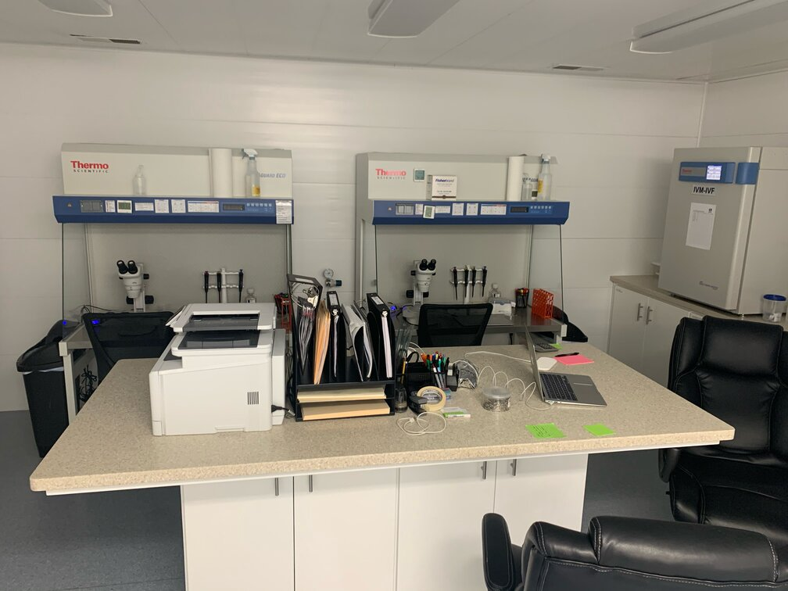

Adam the Scientist
In high school, my deep-rooted love for science became evident, and I channeled most of my energy into this subject. I delved into books encompassing Physics, Biology, Chemistry, and Geology, with a particular penchant for those related to animals. Memorizing scientific names became a quirky but enjoyable pastime. Years later, when I entered university, I pursued a degree in Human Biology, and my dedication paid off with outstanding results. I often found myself tutoring fellow students and engaging in enlightening conversations with my professors, delving into subjects that couldn't be fully explored in our standard curriculum. During my spare hours, I could be found in the microbiology lab, crafting agar plates and conducting small experiments whenever the professor was away. Graduating from Brigham Young University was a mixture of excitement and nostalgia, as I had achieved my academic goals, but it marked the end of a significant chapter in my life. Shortly after obtaining my degree, I secured a position at a laboratory close to my hometown, where I acquired the skills necessary to create and nurture embryos in small petri dishes, a technique known as In Vitro Fertilization. Since 2018, I have been continuously learning and growing within this company, cherishing both the work I do and the wonderful colleagues I share it with. I now oversee the lab's operations and collaborate with veterinarians to expand our client base and consistently enhance our results.
Me

Engineer